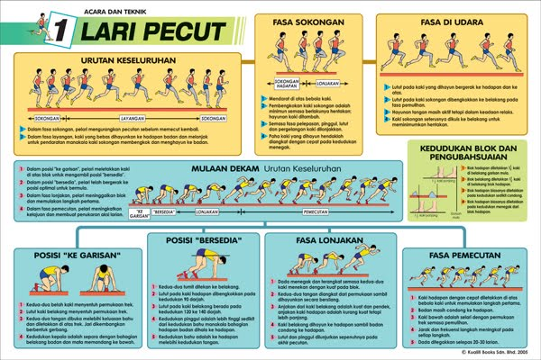
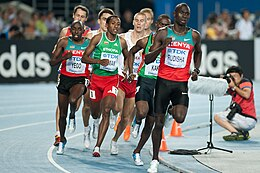
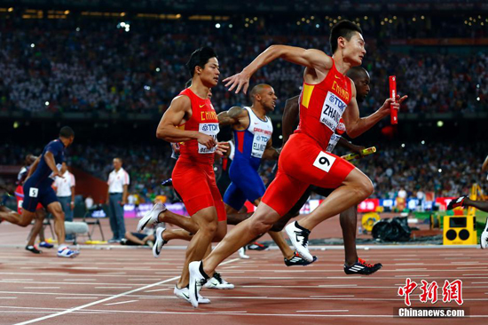

1. Pecut adalah acara sehingga dan termasuk 400 meter. Acara biasa dipertandingkan adalah:
* 50 meter (tertutup sahaja)
* 55 meter (tertutup sahaja)
* 60 meter (tertutup sahaja)
* 100 meter
* 200 meter
* 400 meter

* 800 meter
* 1000 meter (jarang)
* 1500 meter
* One mile[2]
* 3000 meter
* 3000 meter berhalangan

3. Lari berganti-ganti adalah acara di mana empat atlet menyertai sebagai sebuah pasukan, memberi baton besi diantaranya. Acara biasa dipertandingkan adalah:
* 4 x 100 meter lari berganti-ganti
* 4 x 200 meter lari berganti-ganti (sekolah tinggi dan kolej)
* 4 x 400 meter lari berganti-ganti
* 4 x 800 meter lari berganti-ganti
`